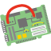

MacBook AirのCPUを交換する改造 44
ストーリー by hylom
買い換えるよりも安いのだろうか…… 部門より
買い換えるよりも安いのだろうか…… 部門より

仕事で利用してるけど、マスクレスで実装してくれるので、イニシャル掛からない分、こういった一点ものは安い。少なくともメタルマスク代以下。
あと納期がすごく短くて助かってます。
表面実装部品を一品ものの試作基板に実装してくれるところに、分解したMacを持ち込んだ、っていう話ですよね。工賃でもう一台Airが買えるくらいはするんじゃないですか? お客さんの用事が仕事でなけりゃ、普段は何をしてる会社だと思うんです? 他のPC修理例とか見ても、普通の事務ノートじゃなくてモバイルWSとかですよね。
この会社の業務内容を見るとまともな会社に見えるが。
> プリント基板の試作、改造、リワーク
> BGA、CSPの交換、実装
> BGAからの配線及びリボール
むしろ、ここに趣味的なこと（PCのCPU交換）を頼もうとした奴の方が何を考えているか分からない。
memoryを増やしたいです。
mid2011なものでして。
メモリくらいなら簡単に増やしてくれるよ。
acerのノートPC使ってるけど、適当な店でメモリ買ったらついでに付けてくれた。まあ作業代は＋αだけど。
Macなんか捨てろって言われてんですよ
Macはすでにクリエイタやエンジニアの道具であることをやめてるからね
OfficeやAdobeが動くUnixともてはやされた時代はもうおわり
> OfficeやAdobeが動くUnixともてはやされた時代はもうおわり
むしろWindows環境で生き辛くなったUnix信者がMacに流れ込んでるよーに見えるのですが。
ここ数年のIT系カンファレンスでのMBA率はもはや異常。
# デスクトップLinux？ 何の冗談です？
クリエイタやエンジニアをジサカーと勘違いしてるのでは？
コンピュータの部品それ自身のエンジニアでもなければ、
壊してしまう危険をおかして自分で拡張なんて、一部の物好きのすることですよ。
必要なアプリが十分に動くスペックの新しいパソコン買い替えるだけですよ普通は。
自作って…。やだねえ思考停止したマカーは。
単純にさ、HPやDELL、レノボのサイト行ってエンジニアリングや映像製作に使うワークステーションシリーズと、Macの今のラインナップ比べてみろよ
酷いぞ今のMacは。
もうiOS向けのアプリ開発環境として生きていくつもりなのかもしれないがね。それなら今のラインナップは理解できる。
捨てられたユーザは去るしか無い。
…マカーって、私の投稿にはどこにもMacて書いてないのに。
だからわざわざパソコンって書いたのに。
エンジニアの解釈に幅があって食い違っていたことは認めます。
私が想定したのは既製品でも仕事ができる範囲のエンジニアです。
そういう人もたくさんいると思いますよ。
2000年以降の Mac は Mac OS X な Unix マシンとして、きちんとしたエンジニアには愛好されてます。
そういう世界があるのが知らない、コンピューターの素人は語る資格がない。
# Linux と Mac OS X と比べるとうぬぬんだけど、Unix が動くノーパソとしての魅力はうぬぬんとかいう議論なら甘んじて受けましょう。まぁ、Windows しかし知らない甘ったれた坊ちゃんにはわからん世界だろうけど。
Appleが最新機種でスペックをアピールすればスペックこそ大事だといい
Appleがスペック競争で落ちると、スペックは大事じゃないと言う
あぁ、これは思考停止じゃなくて信仰か。
上で上げられているメーカのWorkstation真面目にみたことないでしょ。
どれも公式にRed Hatをサポートしていたりするんですが。知らないのはあんたでしょ。
Macの大学向けの凄まじいディスカウントと、他の分野では絶対に組まない国内SI勢とのプライドをすてた協業、さらにWindowsが動くと言う事でMacは大学に大量に納入されました。
その影響か、UnixといえばMacしかしらないような人が最近増殖してます。Unixを使っていて、Macが便利と言うのはいいですけど、Macしか使えないのにこれはUnixだ素晴らしいとか言う馬鹿はどうにかならないのかと思いますね。
> # Linux と Mac OS X と比べるとうぬぬんだけど、Unix が動くノーパソとしての魅力はうぬぬんとかいう議論なら甘んじて受けましょう。
「うぬぬん」ってなんだ？
2箇所も書いているから「うぬぬん」と発音しているんだろうけど、
「云々」だったら変換できない時点でオカシイと気付くべきだったね。
グチャグチャだな。
配線のガイドラインを作りながら千鳥の中で残すボールを決めたんだろうけど。
Mobile Pentium(無印)の頃に直付けCPUの交換をやってた業者があった気がする
マクサスとかアイ・ツー [impress.co.jp]とか。
マクサスの方はキャッシュっぽいページ [204.3.198.144]がヒットするけどアイ・ツー [impress.co.jp]の方はどうなんだろう。楽天市場にも出てたみたいだけど。
#関連で見つけたリンク集 [cat-a.jp]には見なくなった名前がずらり、店舗写真が載ってたページ [vector.co.jp]には「FM-LAB」の文字が…
マクサスというか運営してたイイガは残ってるけど、ハードがらみからは撤退してんじゃないかな。
http://www.iiga.jp/index.html [www.iiga.jp]
それより前に、386SX の時代に、QFPな386SX をCyrix Cx486SLCに載せ替える [keisanjyaku.com]というのが流行ったことがあって、その時も交換請負業者が出てきてましたね。
もっと前だと… 8086 を V30 に載せ替えるなんていう交換改造もありましたが、DIPでソケットなので差し替えるだけとか、業者の出番はなかったかな。
まだこの手の需要あったんだな。
だけど軽い早いで安易に改造して、海外に連れ出して、トラブルにあったらゴミになるので私はやりません。
大抵、この手の改造で、やらかすのが、ファイルシステムの破損だったりするんです。
旅先では、スリープ、休止の機会が増えるので、自宅で使っていたときは、安定してたのに、旅先でスリープからの復帰に失敗して、
ファイルシステム壊すんです。
スリープからの復帰に失敗してシステムファイルを壊すようなOSは捨てた方がいいですよ
代わりにMac OS Xなんかどうですか？
Windowsってのもありますよ。
なんでCPU換装でファイルシステムが関係するの？
大体リフロー不良が原因で衝撃で剥離、全く起動しなくなるだけじゃね？
つーかアンダーフィルも復元しないと余計怖いよね。
今でもやってるのでしょうか・・・
コンピュータは旧約聖書の神に似ている、規則は多く、慈悲は無い -- Joseph Campbell
何なのこのストーリーは (スコア:2)
ネタは1年前の記事。読むと、
交換用CPUはユーザの持ち込みで、価格は応相談と。
せめて試してからタレコんでよ！